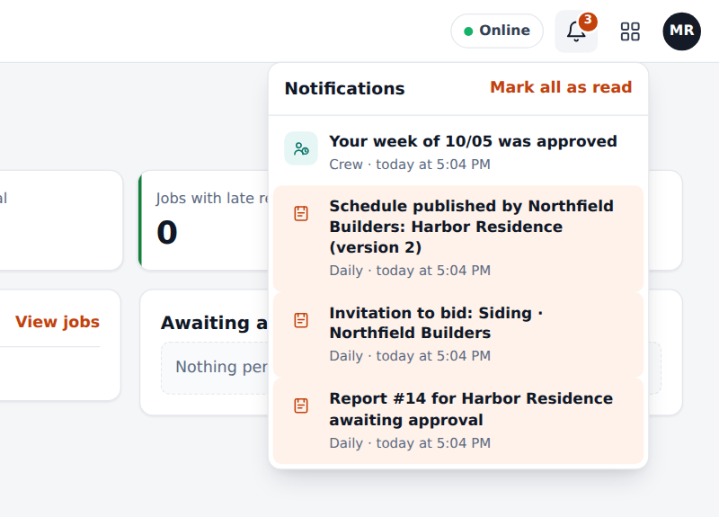
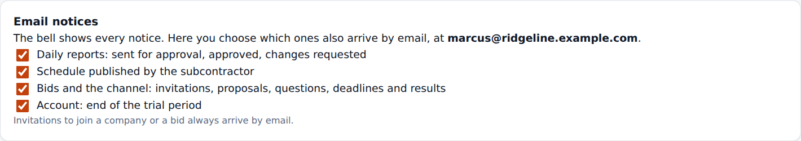
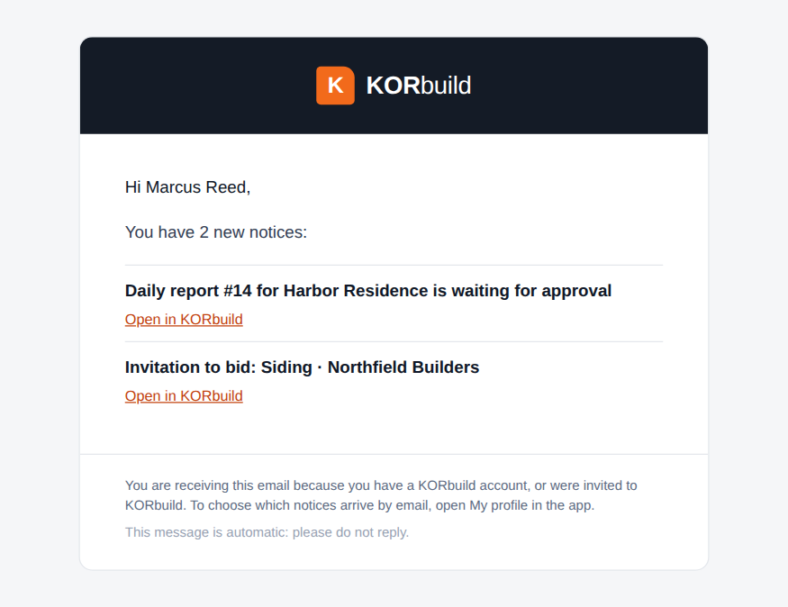

Everything that happens between people and companies in KORbuild reaches you in two places: the bell inside the app and, for some notices, an email. The notices are recorded by the database itself when the event happens, so they are the same on every device and never depend on one phone being open.
The bell
The bell is at the top of every screen. A red number counts what you have not read. Tap a notice to open the screen it is about; it becomes read, on every device.

The bell also shows the reminders the phone works out by itself (the 4 pm daily report reminder, a late daily report, a late schedule stage, a punch with no clock-out). Those exist only on the device and are never emailed.
Which notices exist
| Area | Notice | Goes to | |
|---|---|---|---|
| Daily | A daily report is waiting for approval | People who approve | Yes |
| Daily | The office asked for changes | Whoever filled the report | Yes |
| Daily | The daily report was approved | Whoever filled the report | Yes |
| Schedule | A schedule was published by the subcontractor | The general contractor | Yes |
| Crew | Your week was approved, or returned with a reason | The employee | Bell only |
| Bids | Invitation to bid, deadline extended, notice to all bidders, answers and messages | The invited companies | Yes |
| Bids | A bid was received, a company will not bid, a deadline passed | The contracting company | Yes |
| Bids | You won, the bid went to another company, the bid was canceled | The invited companies | Yes |
| Bids | Sub-tier subcontracting: request to approve, approved, declined | The company above and below | Yes |
| Account | The trial ends in 7 days, or tomorrow; the plan was changed by KORbuild | People who manage the account | Yes |
Choosing what arrives by email
In My profile › Email notices you turn each group on or off: daily reports, schedule, bids and the channel, and the account. Turning one off only stops the email; the bell keeps showing everything. Invitations to join a company or to bid always arrive by email.

What the email looks like
Notices are not sent one by one. When several happen close together, KORbuild waits about 3 minutes and sends one email that lists them all. Urgent ones (an invitation, for instance) go right away. Each email has a button that opens the exact screen in the app. The text follows the language of the person: Portuguese or English.

People without a KORbuild account (a company invited to bid by email, for instance) receive the invitation with a personal link; the link opens the bid without signing in.
Business rules
| ID | Rule | Status |
|---|---|---|
| NTF-001 | Notices are recorded by the database when the event happens, not by the app. They are the same on every device. | Working |
| NTF-002 | Each person reads only their own notices. | Working |
| NTF-003 | A notice shows in the language of the screen; the email uses the language saved in the person's account. | Working |
| NTF-004 | Notices of the same kind, to the same screen, that are still unread merge into one. | Working |
| NTF-005 | Emails wait about 3 minutes and group the notices of the same person; urgent ones go right away. | Working |
| NTF-006 | Each person chooses which groups of notices also arrive by email. The bell is never turned off. | Working |
| NTF-007 | A notice is marked as emailed only after the mail server accepted the message. If sending fails, it is tried again; after 5 tries it stops and shows in the platform administration. | Working |
| NTF-008 | Invitations to join a company or to bid always arrive by email. | Working |
| NTF-009 | The bell reminders worked out by the phone are never emailed. | Working |